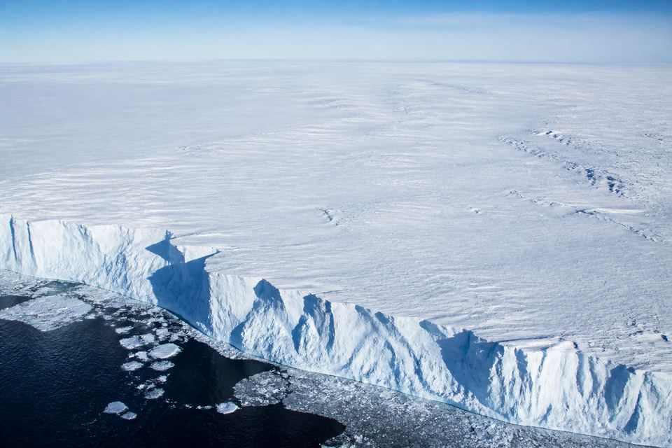
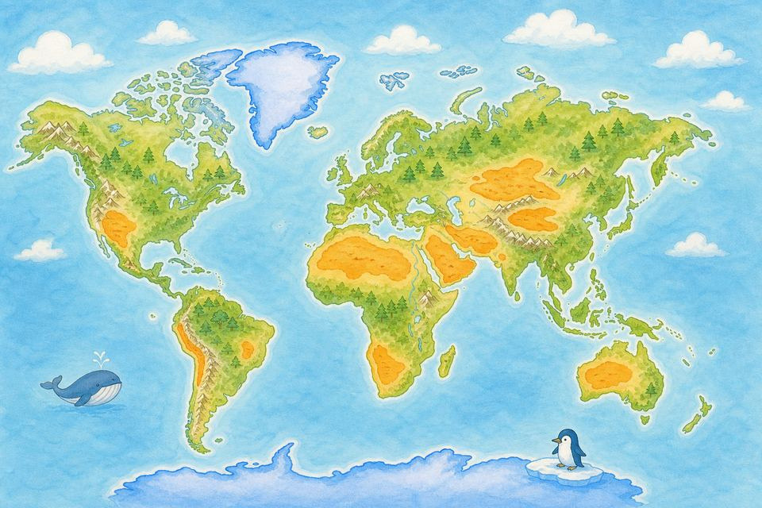

Observation station · Video
先观察，再用证据回答
视频采用 S-Class 原创脚本（Britannica 事实 · Lexile ~600），慢速英音与中英字幕。
把沙漠放入 Hot 或 Cold / Polar
提示：南极与北极是极地沙漠；戈壁、巴塔哥尼亚、大盆地冬天很冷；撒哈拉与阿拉伯是热沙漠。
Hot desert or polar desert?

Hot desert · 热沙漠
白天可能很热，常有沙子或岩石。撒哈拉是世界最大的热沙漠，但不是地球最大的沙漠。

Polar desert · 极地沙漠
又冷又干燥，常被冰覆盖。南极冰盖是地球上最大的沙漠。

Remember these facts.
- 沙漠的关键是干燥，不是必须很热。
- 南极冰盖 > 北极 > 撒哈拉（按面积）。
- 真正的沙漠一年雨水常常 ≤ 25 厘米。
- 高山挡住湿空气，可形成雨影沙漠。
Pin the Deserts · 沙漠地理位置
在真实世界地图上，把十大沙漠名称拖到对应经纬度位置。匹配成功后阅读五年级英文简介。

真实坐标判定
使用 WGS84 经纬度与距离半径，而不是粗糙的图片热点。
十大沙漠全覆盖
南极、北极、撒哈拉、阿拉伯、戈壁、卡拉哈里、巴塔哥尼亚、鲁卜哈利、维多利亚、大盆地。